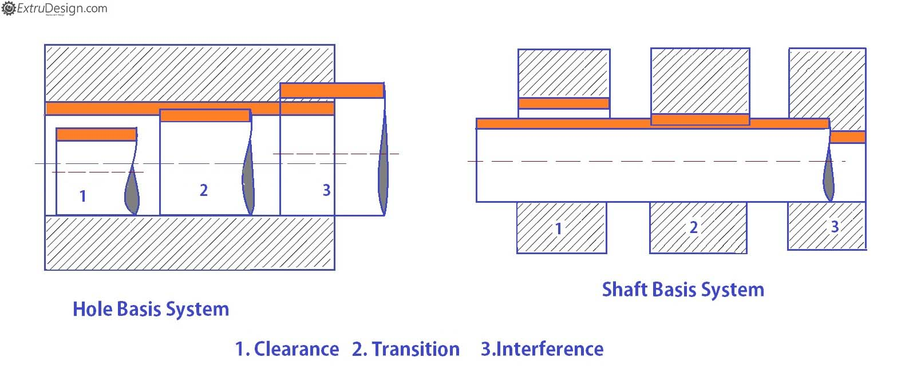
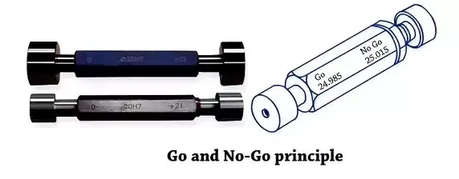
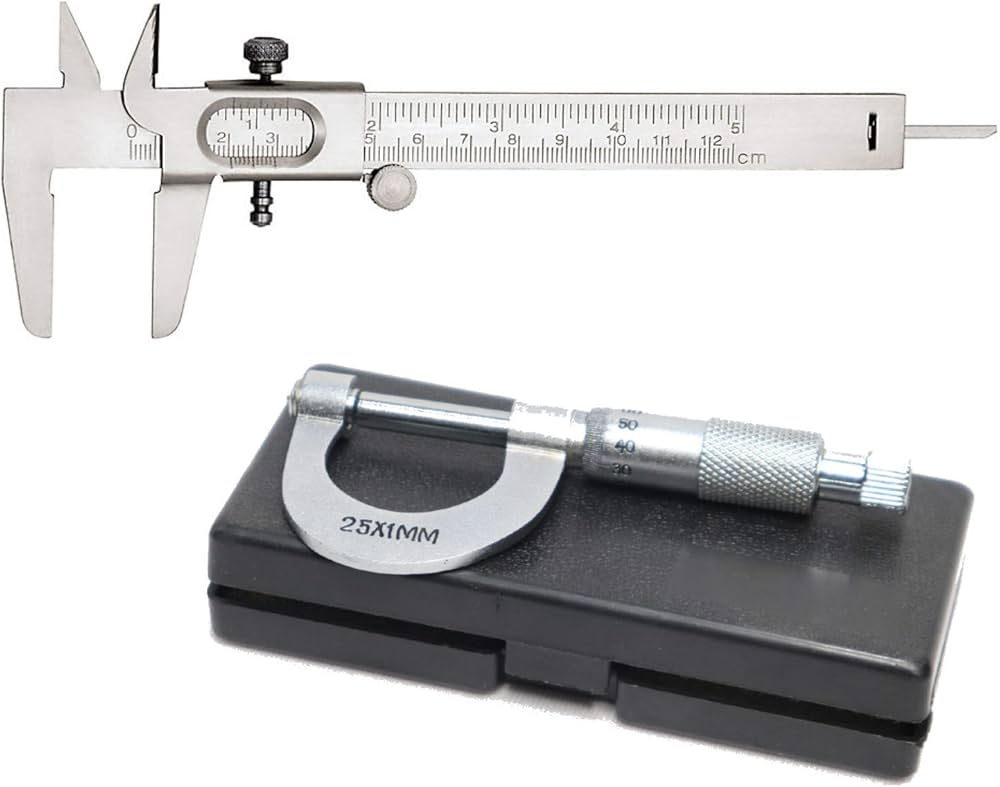
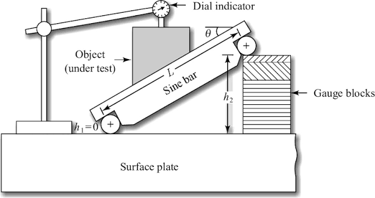
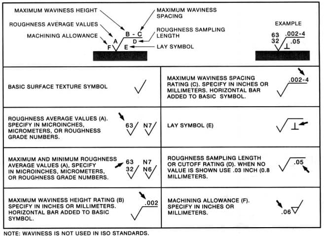
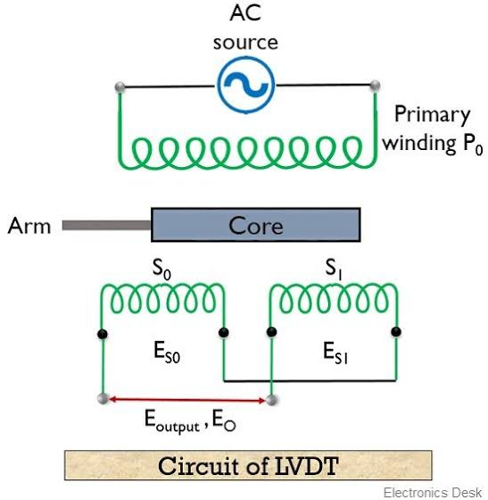

Tolerance: Maximum permissible variation in a dimension. Specified as $\text{Nominal Size} \pm \text{Tolerance}$. Example: 50+0.05−0.02 mm means nominal 50 mm, max 50.05 mm, min 49.98 mm.
Upper Limit (UL): Maximum allowed dimension. Lower Limit (LL): minimum allowed dimension. Tolerance = UL − LL (always positive).
Fit: Relationship between mating parts (hole and shaft). Clearance fit: shaft smaller than hole (always has gap). Interference fit: shaft larger than hole (always has press). Transition fit: can have either gap or press depending on actual sizes.
ISO Tolerance Grade: Denotes precision level. IT01 to IT18 (IT01 finest, IT18 coarsest). IT7 and IT8 common for general engineering parts. Tighter grade (lower number) costs more to manufacture.
Hole Basis vs Shaft Basis: Hole-basis system: hole tolerance fixed (typically H7 or H8), shaft tolerance varies (a, b, c, ... h for clearance; j, k, ... n for transition; p, ... z for interference). Shaft-basis: shaft fixed (typically g6 or h6), hole tolerance varies. Hole-basis more common (easier to make standard holes).
Fundamental Deviation (Zero Line): Reference position for tolerance bands. Upper tolerance limit (ES/es) = upper deviation. Lower tolerance limit (EI/ei) = lower deviation. Used to position tolerance zone relative to nominal size.

GO Gauge: Simulates minimum material limit (LML). For shaft: GO has maximum allowed dimension (goes on good shaft). For hole: GO has minimum allowed dimension (fits in good hole). GO must pass on acceptable parts.
NO-GO Gauge: Simulates maximum material limit (MML). For shaft: NO-GO has minimum allowed dimension (stops on oversized shaft). For hole: NO-GO has maximum allowed dimension (stops in undersized hole). NO-GO must not pass on acceptable parts.
Taylor's Principle: GO gauge checks the complete profile (full-form gauge). NO-GO gauge checks one feature at a time (single-element gauge). Purpose: GO ensures assembly works; NO-GO verifies individual feature is not out-of-spec.
Plug & Ring Gauges: Plug gauge: for checking internal holes (GO plug enters, NO-GO plug does not). Ring gauge: for checking external shafts (GO ring goes on, NO-GO ring does not). Both fixed-limit gauges without adjustment.

Slip Gauge (Gauge Blocks): Precision-hardened steel blocks of exact dimensions (e.g., 1.005 mm, 1.01 mm, ..., 100 mm). Used as length standards for setting instruments or dimensional comparison.
Wringing: Process of combining slip gauges in stacks to build desired dimension. Gauges are optically flat; when combined with precise technique, they adhere (wringing) due to oil film between surfaces. No bolts or adhesive needed.
Set Composition: Standard set (e.g., 83-piece set) contains blocks in specific increments to allow assembly of any dimension within range (typically 0.5–100 mm). Selection of blocks minimizes number needed for stacking.
Applications: Setting comparators, sine bars, height gauges. Checking and calibrating other instruments. Building reference standards for inspection.
Vernier Caliper: Reads linear dimensions to 0.02 mm (least count). Main scale in mm; vernier scale has 50 divisions over 49 mm (each division = 0.98 mm). Reading = main scale + (vernier division × 0.02 mm). Range: 0–150 mm typical.
Micrometer Screw Gauge: Reads to 0.01 mm (least count). Thimble scale has 50 divisions; one rotation = 0.5 mm pitch. Reading = main scale (mm) + (thimble division × 0.01 mm). Ratchet stop prevents over-tightening (standardizes measuring force). Range: 0–25 mm typical.
Depth Gauge: Variant of vernier or micrometer for measuring blind hole depths. Probe extends from graduated rod. Accuracy same as parent instrument (0.02 or 0.01 mm).
Inside Calipers / Outside Calipers: Simple tools for comparative measurement (not absolute). Must be compared to a standard or combined with ruler for dimension reading. Low cost, moderate accuracy (±0.5 mm).

Sine Bar Principle: Converts angular measurement to linear height measurement via sine relation: $\sin \theta = \frac{h}{L}$. Where $h$ = height of slip gauge stack, $L$ = center distance between precision rollers (typically 100 mm or 200 mm, fixed).
Setup: Sine bar placed on surface plate with one roller on plate, other elevated by slip gauge stack. Workpiece secured on bar. Dial indicator or comparator checks if workpiece surface is level (parallel to reference).
Angle Calculation: Angle = $\arcsin(h/L)$. For small angles, error ≈ $\frac{L}{2}\theta^2$ (in radians). Most accurate within 30° of the horizontal; loss of sensitivity beyond that.
Related Instruments: Sine table (larger version for workpieces). Sine bar blocks (with fixed heights for common angles). Autocollimator (optical method for very small angular deviations).

Roughness Parameters (Most-Tested): Ra (arithmetic average roughness) = average absolute deviation from centerline over sampling length. Rz (ten-point average) = mean of 5 highest peaks and 5 deepest valleys. Rq (root mean square) = RMS of deviations.
Ra Interpretation: Higher Ra = rougher surface. Unit: micrometers (μm). Typical ranges: mirror finish 0.1–0.2 μm, precision machining 0.4–0.8 μm, rough machining 3–6 μm. Ra is most commonly specified on engineering drawings.
Measurement Instruments: Talysurf (stylus profilometer): traces surface with diamond stylus, records profile, computer calculates Ra/Rz. Optical flats: interference fringes reveal surface variation (not numerical, but visual inspection). Laser surface profilometer: non-contact optical measurement.
Surface Finish vs Manufacturing Process: Casting & forging: 6–25 μm. Turning/milling: 0.8–3.2 μm. Grinding: 0.2–0.8 μm. Lapping/polishing: 0.05–0.2 μm.

Comparator (Comparision Instrument): Measures deviation from a reference standard, not absolute dimension. Types: mechanical (dial indicator), electronic (LVDT, inductive), pneumatic, optical.
Dial Indicator (Mechanical Comparator): Probe contacts workpiece, movement magnified by gears to pointer on dial. Accuracy: ±0.01–0.05 mm. Must be zeroed against a master gauge before use (since it reads relative displacement, not absolute).
LVDT (Linear Variable Differential Transformer): Non-contact displacement transducer. Core slides inside two coils; axial movement changes mutual inductance, producing AC voltage proportional to displacement. Output: 0–10 V for 0–X mm range (depending on setup). Used in automated comparators and inspection systems.
Strain Gauge: Measures strain via change in electrical resistance. Gauge factor $G$ relates fractional resistance change to strain: $\frac{\Delta R}{R} = G \times \varepsilon$. Typically connected in Wheatstone bridge for amplification and temperature compensation. Output: mV signal proportional to applied stress.

Accuracy: Closeness of measured value to true value. Affected by systematic errors (zero error, parallax, friction). High accuracy = low bias error.
Precision: Consistency and repeatability of measurements. Affected by random errors (vibration, resolution, instrument stability). High precision = low scatter in repeated measurements.
Independence: A measurement can be precise but inaccurate (e.g., all readings 10 mm high = precise but wrong). Can be accurate on average but imprecise (scatter but mean correct). Ideal: both accurate and precise.
Where: $i$ = tolerance unit (μm), $D$ = nominal dimension (mm). Used to calculate IT grades: IT grade = $k \times i$ (where $k$ depends on IT level). Not commonly asked numerically, but formula memorization required for some exams.
Where: $\theta$ = angle to be measured or set, $h$ = height of slip gauge stack (mm), $L$ = center distance between precision rollers (100 or 200 mm, fixed).
Where: $L$ = sampling length (mm), $y(x)$ = deviation of surface profile from centerline. Ra is measured in μm; higher Ra indicates rougher surface.
Where: $\Delta R$ = change in resistance (Ω), $R$ = initial resistance (Ω), $G$ = gauge factor (typically 2–4), $\varepsilon$ = strain (dimensionless). Output voltage in Wheatstone bridge: $V_{\text{out}} \propto \varepsilon$.
| Instrument / Parameter | Measurement Type | Least Count / Resolution | Typical Range | Accuracy | Application |
|---|---|---|---|---|---|
| Vernier Caliper | Linear (absolute) | 0.02 mm (50 divisions) | 0–150 mm typical | ±0.05 mm | General dimensional measurement; ID/OD/depth on shafts and holes |
| Micrometer Screw Gauge | Linear (absolute) | 0.01 mm (50 divisions, 0.5 mm pitch) | 0–25 mm typical; extended 0–300 mm | ±0.01 mm | Precision linear measurement; thread diameter, precision shafts |
| Depth Gauge | Linear (absolute, depth only) | 0.02 mm (vernier) or 0.01 mm (micrometer type) | 0–200 mm typical | ±0.05 mm (vernier) to ±0.01 mm (micrometer) | Blind hole depth, pocket depth, step measurement |
| Slip Gauges (Gauge Blocks) | Linear (reference standard) | Exact; e.g., 1.005, 1.01, 1.02 ... 100 mm | 0.5–100 mm (by stacking) | ±0.5 to ±2 μm (class 0 or 1) | Setting comparators, sine bars; building length standards; instrument calibration |
| Dial Indicator (Mechanical Comparator) | Relative displacement (comparative) | 0.01 mm (scale division) | 0–50 mm (typical travel) | ±0.03 mm (repeatability); ±0.05 mm (accuracy) | Runout checking, parallelism, flatness; must be zeroed to reference master |
| Sine Bar | Angular (indirect, via height) | Depends on slip gauges used (e.g., 0.01 mm height = ~0.0057° for 100 mm bar) | Typically ±30° from horizontal | ±0.01° to ±0.05° (depending on slip gauge precision) | Angle setting and measurement; taper verification; precision angular work |
| LVDT (Transducer) | Linear displacement (to electrical signal) | 0.001 mm (depends on signal processing) | ±1 to ±50 mm (adjustable) | ±0.05% of full scale (excellent linearity) | Automated inspection systems; dynamic displacement measurement; integrated into comparators |
| Strain Gauge | Strain / Stress (via resistance change) | Micro-strain (depending on bridge sensitivity; typically 1–10 μ-strain) | Micro-strain to % strain | ±0.5% (with good bridge circuit and temperature compensation) | Stress analysis; load measurement; sensor integration in load cells |
| Optical Flat | Flatness / Surface deviation (visual, via interference) | Fringe spacing ≈ 0.3–0.5 μm; visual inspection ~0.1 μm | Limited to flat surface area | ±0.05 to ±0.1 μm (visual resolution) | High-precision flatness checking; inspection of gauge block surfaces |
| Talysurf (Stylus Profilometer) | Surface roughness (Ra, Rz, Rq) | 0.01 μm (vertical); 0.1 mm (horizontal sampling) | Ra: 0.05–25 μm; profile depth: 0–200 μm | ±5% of reading (with calibration) | Production roughness verification; surface finish quality control |
| GO/NO-GO Plug Gauge (Fixed Limit) | Hole diameter (relative to tolerance) | Fixed (GO and NO-GO hardened sizes) | Specified by nominal + tolerance | Limit check only (pass/fail, not dimension) | High-volume inspection; hole acceptance/rejection; manufacturing floor use |
| GO/NO-GO Ring Gauge (Fixed Limit) | Shaft diameter (relative to tolerance) | Fixed (GO and NO-GO hardened sizes) | Specified by nominal + tolerance | Limit check only (pass/fail, not dimension) | External diameter inspection; shaft acceptance/rejection |
Revision Focus Areas (Frequency-Ranked):
1. Limits, fits & tolerances | 2. GO/NO-GO gauges & Taylor's principle | 3.
Vernier & micrometer least count | 4. Sine bar angle measurement | 5. Surface
roughness (Ra) and accuracy vs precision